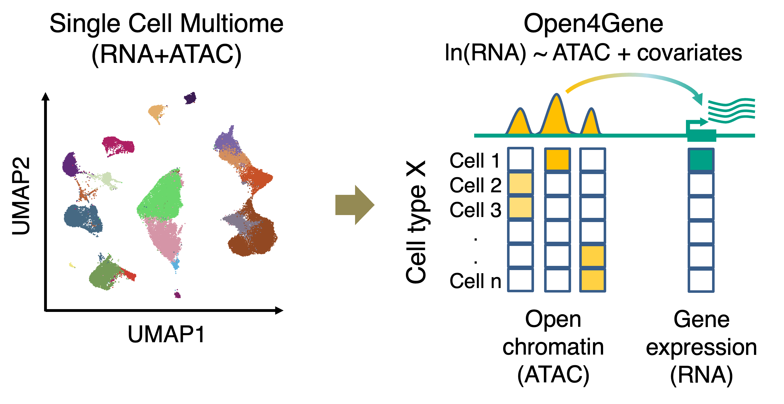

Software
|
Open4Gene: Hurdle Model-based Method for Peak-to-Gene Linkage Analysis Open4Gene is an Hurdle model-based method for peak-to-gene linkage analysis from single-cell multiome (ATAC+RNA) datasets. Open4Gene applies two-component mixture Hurdle model to account for excess zeros in single-nucleus RNA data and model linkage between peak open chromatin (ATAC) and gene expression (RNA). |
 | |
|
SMART: Specific Methylation Analysis and Report Tool SMART is a quantitative method for the identification of tissue or cell type-specific DNA methylation marks from bisulfite sequencing datasets. This tool focuses on the methylation-based genome segmentation, de novo identification of differentially methylated regions (DMRs), and the identification of DMRs from predefined regions of interest. |
||
|
QDMR: Quantitative Differentially Methylated Region QDMR is an entropy-based method for the identification of differentially methylated regions by entropy. This tool focuses on quantifying methylation differences by entropy and identifying differentially methylated regions (DMRs) within predefined regions of interest. |
Genomic and Epigenomic Atlas
|
eGFRcrea GWAS and Genetic Scorecard Atlases The eGFRcrea GWAS and Genetic Scorecard Atlases provide a comprehensive mapping and prioritization of GWAS variants associated with kidney function, including functional variants, target genes, and cell type-specific regulatory circuits. |
||
|
Human Methylation Mark Atlas across Tissues and Cell Types The Human Methylation Mark Atlas provides the DNA methylation marks identified across 50 human tissues and cell types by applying SMART to large-scale bisulfite sequencing datasets. |
||
|
DevMouse: Mouse Developmental Methylome Database DevMouse is the mouse developmental methylome database, which provides DNA methylomes in temporal order and quantitative analysis of methylation dynamics during mouse development. |